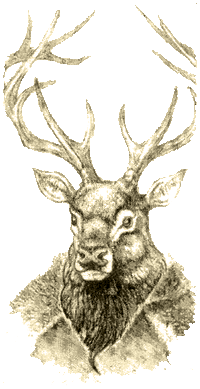

| |
Karnos, a bestiák
ura
Új istenség Warhammer Fantasz
Roleplaz-hez
|
 |
Leírás:
Néhány teológus úgy tartja, hogy
Taalnak, aki a természet és a vad helyek
istene, egyik megtestesülése Karnos, aki
az erdei elf panteon egyik legfõbb
istene. Õ az ura az erdõ
teremtményeinek, akikkel az elfek
megosztják a lakhelyük. Õ a
bestiabarátok patrónusa, de elf
felderítõk és vadászok közt is
akadnak hívei.
Karnos ábrázolásai általában
összetettek: egy több mint tíz láb
magas, elf testû, de egy szarvasbika
fejével és farkával rendelkezõ alaknak
képzelik. Azt is beszélik, hogy bármely
erdõlakó teremtmény alakját felveheti.
Jellem: Semleges. A természet sem nem
jó, sem nem gonosz, mintahogyan maga
Karnos sem.
Szimbólum: Akárcsak Taalt, Karnost is
szarvasbika fejjel és szerteágazó
aganccsal ábrázolják. Ugzanakkor Karnos papjainak
öltözködése semmiben nem különbözik
a többi elfétõl.
|
Kultuszának területe: Hite Óvilág
minden erdei elf településén
megtalálható.
Templomai: Az erdõ Karnos temploma!
Ahol vadállatok kóborolnak, õ jelen van.
Mindazonáltal akadnak helyek, amelyek kiemelkedõ
jelentõséggel bírnak számára: egyes erdei
tisztások, sziklák, fák és még sok egyéb más.
Az erdei elfek azonnal felismerik ezeket a területeket,
a többi faj képviselõi azonban nem. Ráadásul
az elfek szinte mindig igyekeznek távol tartani a
többi faj késviselõit ezektõl a szent helyektõl.
Barátok és ellenségek: Karnos követõit
általában tisztelik az erdei elfek, és a többi
faj azon képviselõi, akik Taalt, Rhyat vagy az
Õsi Hitet (Old Faith) követik. Ám õk úgy
tartják, hogy Taal egyesíti önmagában az erdei
elf panteon számos istenét, köztük Karnost is,
és nem kizárólag Karnos egyik megtestesülése.
Egészében véve elmondható, hogy
Karnos követõi nem sokban különböznek Óvilág
többi istenének híveitõl, szüntelen gyûlölettel
tekintenek a Káosz kultuszokra és a goblinoidok
isteneire.
Szent napok: Karnosnak két fõ ünnepe
van: tavasz közepe, mikor a termés bõséges és
sok gyermek születik, illetve az õsz közepe,
mikor minden fajnak fel kell készülnie a tél közeledtére.
Ezek az idõpontok nem szerepelnek a birodalmi
naptárban, õsrégi elf tradíciókban
lefektetett természeti jelenségek alapján számítják
ki, és évrõl évre változik.
A hit elõfeltétele: Bármelyik erdei elf
Karnos követõjévé válhat, de a legtöbben az
egész erdei elf panteont imádják, pusztán nem
egyforma mértékben.
Elõírások: Karnos követõinek az
alábbi elõírásokat kell betartaniuk: soha ne bántsd
az állatokat, ez alól kivétel, ha önvédelembõl
vagy táplálékszerzés céljából ártasz nekik
(például az elf vadászatok is mindig nagy lakomával
érnek véget, ezért a vadászat elfogadott);
soha ne tûrd el egy állat szenvedését. Tégy
meg minden tõled telhetõt, hogy a goblinoidokat,
a bestiákat és a Káosz mutánsait kiûzd az erdõkbõl.
Varázslatok: Karnos papjai használhatják
a piti mágia (Petty Magic) összes varázslatát,
valami az elemi mágiát (Elemental Magic)
és a druida varázslatokat (Druidic Priest
Spells), kivéve a Föld erejének megcsapolását
(Tap Earthpower) és Szent liget létrehozását
(Create Sacred Grove)
Jártasságok: Karnos beavatottjai
egy állatok elbájolása (Charm Animal) jártasságot
kapnak a klasszikus titkos nyelv (Secret
Language – Classical) helyett. Karnos papjai
egyszer dobhatnak az Erdõjáró (Ranger) jártasság-táblán
minden szinten, ezt addig ismételhetik minden
alkalommal, ameddig olyan jártasságot nem sikerül
kidobniuk, ami még nincs a birtokukban. Ezeket a
jártasságokat a WFRP alapkönyv (151. oldalán)
leírt jártasságokon felül, bonuszként kapják
meg. Karnos papjai ezen felül a beavatott (Initiate)
szint felett még megkapják az állatok hívása
(Call Animal) jártasságot is, szintenként
egy-egy új állatot felvéve.
Próbák: A Karnos által adott próbák
mindig az állatok és az erdõ védelmét szolgálják.
Ez többek közt magában foglalja azoknak az elûzését
is, akik veszélyt jelentenek az állatokra, mint
például az emberi orvvadászok, a goblinoidok,
illetve a Káosz bandák. Ritkán, de próba lehet
az is, hogy megszabadítsák a szenvedéstõl az
álatokat, például olyan állatok kiszabadítása
amiket állatviadalokra fogtak be. A múltban ez a
fajta próba sok konfliktus forrása volt az
emberekkel, de az olyan szórakozások, mint például
a medvék harcoltatása, egyre ritkábban
fordulnak elõ, és az emberek is kezdenek rá úgy
tekinteni, mint barbár és szükségtelen idõtöltésre.
Áldások: A Karnos által kedvelt jártasságok
mind az állatokkal kapcsolatosak: állattartás (Animal
Care), idomítás (Animal Training), állatok
elbájolása (Charm Animal), lovaglás (Ride)
és trükkös lovaglás (Trick Riding), és
esetleg mások a helyzettõl függõen. A
leggyakrabban alkalmazott tesztek a Cl és Fel,
amiket akkor használunk, ha állatokra
vonatkoznak a próbadobások. Ritka alkalmakkor
adható a játékosnak egy egyszer használható
állatok hívása (Call Animal) jártasság
is. A bûnetetések, mint általában,
ellentettjei az áldásoknak, de Karnos büntethet
egy karaktert az állat undor (Animal Aversion) mágikus
átkával is (alapkönyv 138. oldal).
fordította: Hmuda &
Rincewind
A cikk az Apocrypha Now kiegészítõ
Elven Beastfriend címû fejezete alapján
készült
|
|